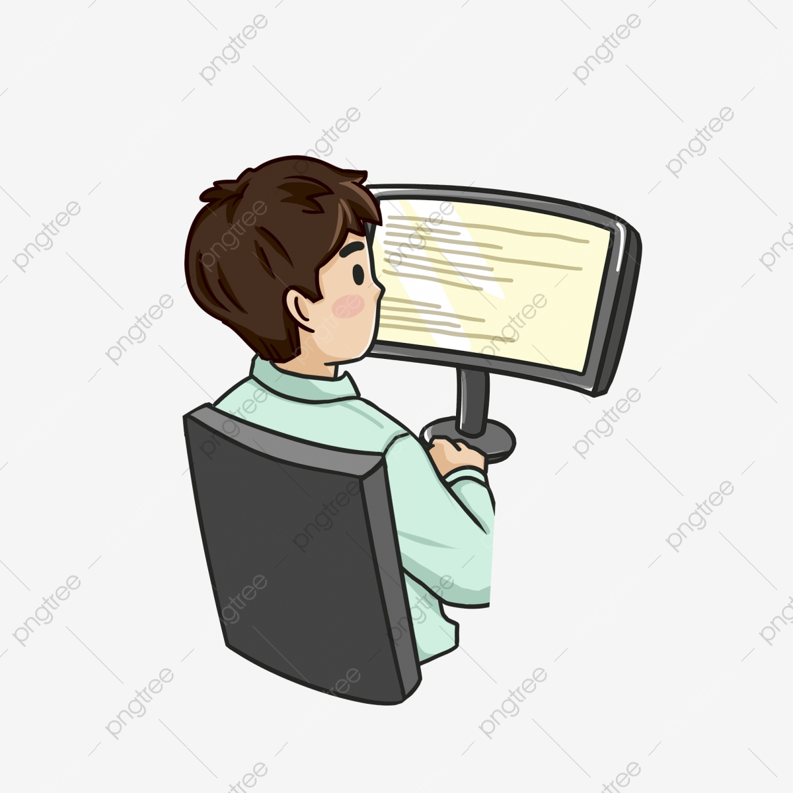

Top 5 cơ hội nghề nghiệp dành cho sinh viên CNTT

Hình 1. - Chìa khóa thành công
Giám đốc CNTT
Với kinh nghiệm 10-20 năm học IT có thể trở thành CIO - Giám đôc
CNTT,
sở hữu
mức lương 3000-5000
CIO có nhiệm vụ đề ra các chiến lược về CNTT cho toàn công ty cũng như đi đầu trong việc tìm kiếm
khách hàng mới
Trưởng phòng CNTT
Ở mức kinh nghiệm thấp hơn 5-10 năm, sinh viên IT có thể trở thành
IT manager - Trưởng phòng CNTT và sở hữu mức lương 1000-2000 USD
Trưởng phòng CNTT là người có trách nhiệm xây dựng các dự án phầm mềm, quản lý nhân sự, phối hợp với
giám đốc
kỹ thuật để phát triển công nghệ.
Giám đốc kỹ thuật
Học viên ngành UT có thể trở thành Technical leader
- Giám đốc kỹ thuật có khi từ 5 năm đến 10 năm kinh nghiệm
Trưởng phòng CNTT là người có trách nhiệm xây dựng các dự án phầm mềm, quản lý nhân sự, phối hợp với
giám đốc
kỹ thuật để phát triển công nghệ.
Trưởng phòng lập trình
Team leader - trưởng môn nhóm lập trình là công việc thường
thấy của dân it khi có 3-5 năm kinh nghiệm
Trưởng phòng CNTT là người có trách nhiệm xây dựng các dự án phầm mềm, quản lý nhân sự, phối hợp với
giám đốc
kỹ thuật để phát triển công nghệ.